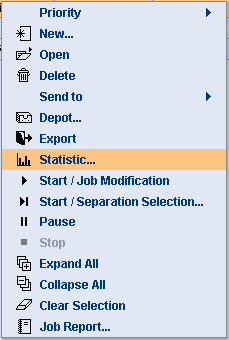

In all the tabs in the "Jobs" section, you can view for every output material the number of jobs output with this material and the number of separations (plates/films). These statistics are generated for each of the jobs shown in the currently open tab. This lets you have a fast overall idea of the jobs to be output or already output, of how much plate material was used, etc. You can use this information, for example, to plan the material needed for a work shift.
1. Right-click any spot in the open tab.
2. Select "Statistics" in the context-sensitive menu.

3. The "Statistics" dialog opens. It displays a table with the plate materials used in the job list of the currently open tab, the respective number of jobs and separations.
Click "Cancel" to close the window.
Copyright © 2013 Heidelberger Druckmaschinen AG